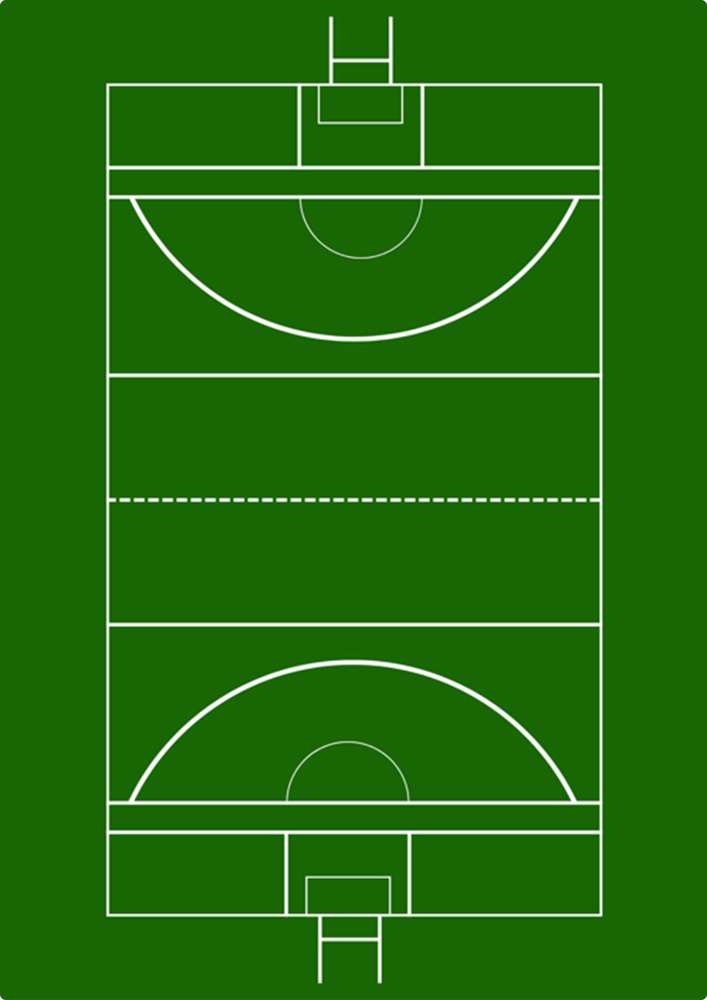
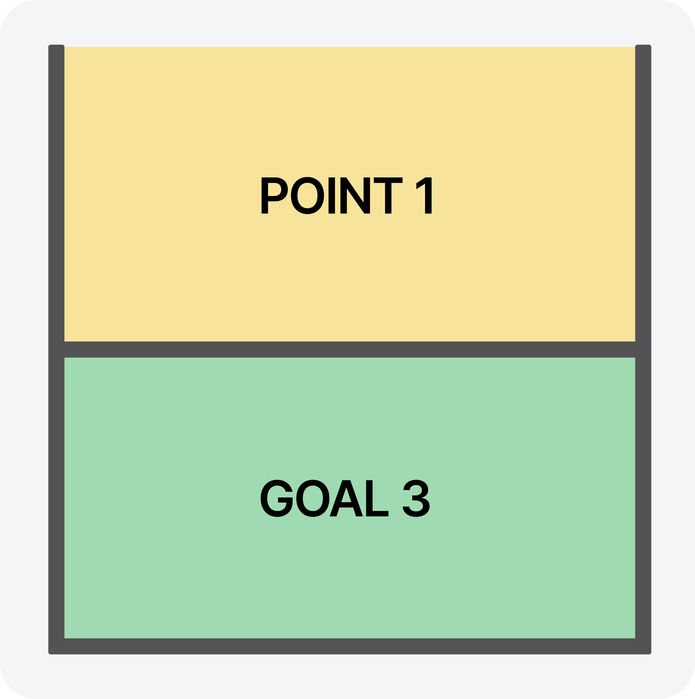
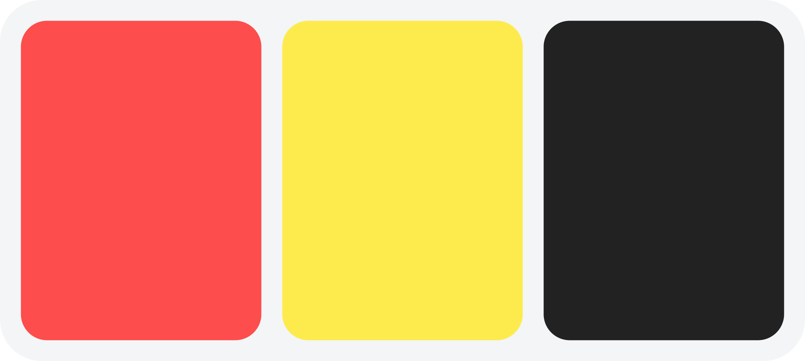

게일릭 풋볼의 규칙
개요
게일릭 풋볼은 공을 차거나 손으로 패스하여 상대 골대에 득점하는 전통
아일랜드 스포츠이다.
경기장은 직사각형으로 구성되며, 양 끝에는 H자 형태의 골포스트가
설치된다.
골(Goal)과 포인트(Point)를 모두 활용하는 독특한 득점 시스템을 갖는다.
기본 규칙
경기 시간
- 경기는 전·후반 각 35분, 총 70분으로 진행된다.
- 추가 시간은 심판의 판단에 따라 부여된다.
팀 구성
- 경기장은 직사각형 형태이며 약 130m × 80m 크기로 설정된다.
- 양 끝에는 H자 형태의 골대가 설치된다.
규격
- 경기장은 직사각형 형태이며 약 130m × 80m 크기로 설정된다.
- 양 끝에는 H자 형태의 골대가 설치된다.

득점 및 경기 진행
득점 방식
- Goal (골): 공이 골키퍼가 지키는 골문 아래로 들어가면 3점.
- Point (포인트): 골문 위의 포스트 사이로 지나가면 1점.
경기 재개 규정
- 공이 골라인을 벗어나고 공격팀이 마지막으로 터치하면 킥 아웃.
- 공이 사이드라인 밖으로 나가면 슬라이드 라인 킥.
- 반칙이 발생하면 프리킥 또는 심판 재량에 따라 패널티 킥.
볼 이동
- 선수는 공을 잡고 4스텝 이상 이동할 수 없다.
-
계속 이동하려면 다음 중 하나를 수행해야 한다.
- Solo: 공을 발등으로 올려 다시 손으로 받는 동작
- Bounce: 공을 바닥에 튀기는 동작(연속 2회 불가)
- 패스는 핸드패스 또는 킥패스로 가능하다.

반칙 및 제재
기술적 반칙
- 4스텝 이상 공을 들고 달리는 행위.
- 연속 두 번의 바운스.
- 공을 어깨보다 뒤쪽 방향으로 던지는 행위.
- 상대를 방해하는 비신체적 규정 위반.
공격적 반칙
- 밀기, 잡기, 차기, 불필요한 접촉.
- 위험한 태클.
- 고의적 비신사 행위.
카드 종류
- Yellow Card: 경고.
- Black Card: 10분간 퇴장, 특정 반칙에 적용.
- Red Card: 즉시 퇴장, 재입장 불가.

심판 및 경기 운영
심판 구성
- 주심(Referee)
- 라인즈맨(Linesmen) 2명. 사이드라인·파울 보조 판정을 한다.
- 엄파이어(Umpires) 4명. 골/포인트 판정, 골라인 판정을 한다.
- 필요 시 비디오 판독(VSAR)을 활용할 수 있는 경우도 있다.
심판 권한
- 경기 진행, 파울 판정, 카드 제재.
- 시간 추가 결정.
- 점수 판정 또는 번복.
- 경기 중 모든 상황에 대한 최종 결정권 보유.
경기 기록 관리
- 득점, 카드, 교체, 주요 사건 등은 주심이 공식 기록으로 관리한다.
- 경기 종료 후 모든 기록은 연맹(GAA) 시스템에 보고되고 저장된다.